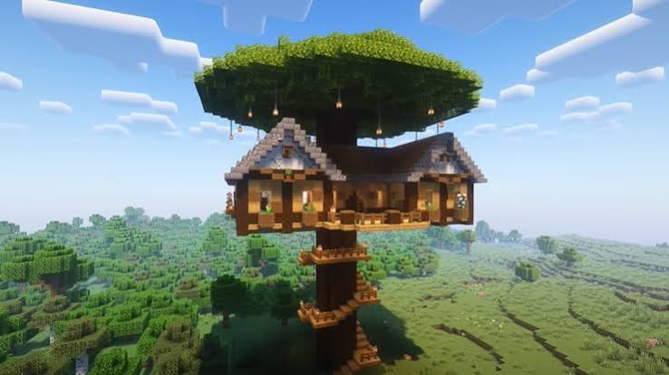

My First Minecraft Adventure
October 7, 2026 by Caudillo Jones
.jpg)
Minecraft is one of my favourite games
because it allows players to explore and
build almost anything they can imagine.
Every new world creates an opportunity for
adventure. From gathering resources to
building a safe home, there is always
something interesting to do.
When I first started playing, I spent
most of my time collecting wood, crafting
tools and exploring caves. I quickly
learned the importance of preparing
before nighttime. The experience taught
me patience, planning and creativity.
Building My Minecraft World
October 6, 2026 by Caudillo Jones

One of the best features of Minecraft
is the freedom to design and build unique
structures. Whether it is a small wooden
house or a large castle, the possibilities
are almost endless. I enjoy experimenting
with different blocks and materials to
create interesting designs.
Building also requires careful planning
and problem-solving. Choosing the right
location, collecting materials and
organizing the structure all contribute
to the finished project. This makes
Minecraft both entertaining and
educational for players of all ages.